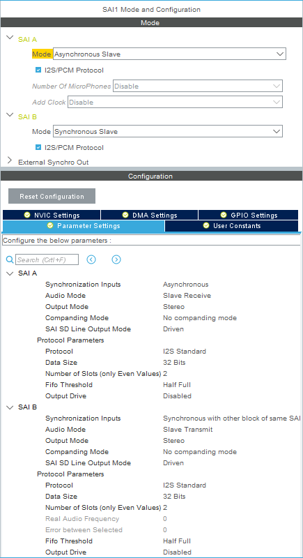
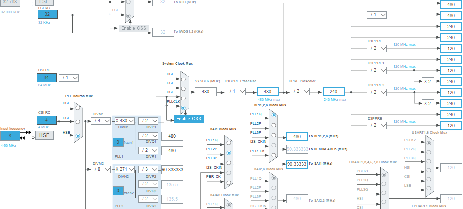
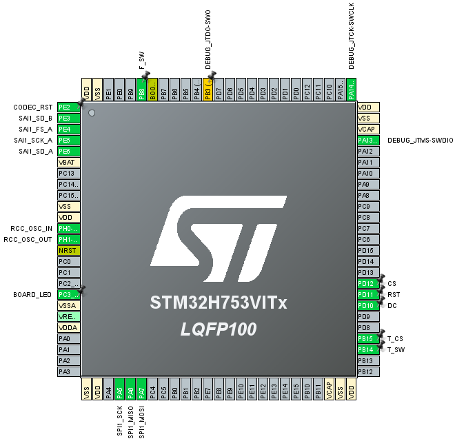
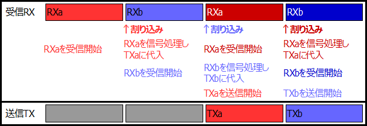

Owm Pedal H7 ソフトウェア編
2020年02月11日 カテゴリー：STM32
自作デジタルエフェクター「Owm Pedal H7」の各設定、内部プログラミングをしていきます。
Owm Pedal H7 ハードウェア編はこちら
内部データはGitHubへ
＜開発環境について＞
STM32CubeIDEのバージョン1.1.0ではクロック設定がうまく動作しなかったので、STM32CubeMXを併用していました。バージョン1.2.1では修正されているようで、今のところ問題は起きていません。
main.cファイルを「main.cpp」にリネームすればC++を使うことができます。main.cppに追加記載しているのは下記3か所です。主にuser_main.cppを編集することになります。
「/* USER CODE BEGIN Includes */」の下→#include "user_main.hpp"
「/* USER CODE BEGIN 2 */」の下→mainInit();
「/* USER CODE BEGIN 3 */」の下→mainLoop();
コンパイラの最適化設定を高速動作向けに変更しておきます。
Project→Properties→C/C++ Build→Settings→Tool Settingsタブ
→MCU G++ Compiler→Optimization→Optimization level [Optimize for speed (-Ofast)]
＜STM32CubeIDE iocファイル設定＞
・ST-LINK接続（結線はOwm Pedal ソフトウェア編参照）
Trace and Debug→DEBUG→Debug [Serial Wire]
・処理高速化のためDキャッシュを有効化
System Core→CORTEX_M7→Cortex Interface Settings→CPU DCache : Enabled
・クロック源として外部水晶振動子を使用
System Core→RCC→High Speed Clock (HSE) [Crystal/Ceramic Resonator]
・動作モード設定（480MHz動作のために必要）
System Core→RCC
→System Parameters→Product revision : rev.V
→Power Parameters→Power Regulator Voltage Scale : Power Regulator Voltage Scale 0
▽SPI設定
タッチパネル付ディスプレイの接続はSPIです。詳細は以前の記事（STM32 SPI接続タッチパネル付ディスプレイを使う）をご参照ください。
※通信速度を上げ過ぎるとタッチ位置をうまく取得できないので、本来はディスプレイとタッチを別々のSPIにした方がよいと思われます。
▽SAI設定

Multimedia→SAI1→SAI A→Mode [Asynchronous Slave] I2S/PCM Protocol にチェック
同SAI B→Mode [Synchronous Slave] I2S/PCM Protocol にチェック
SAI A Data Size : 32 Bits
SAI A FIFO Threshold : Half Full
SAI B Audio Mode : Slave Transmit
SAI B Data Size : 32 Bits
SAI B FIFO Threshold : Half Full
NVIC Settingsタブ→SAI1 global interrupt→Enabledにチェック（2020年3月16日追記）
※STM32H7でDMAを利用するのは大変そうなので、今回は利用していません。
→参考ページ：STM32H7でキャッシュ一貫性を保持したDMA転送(Memory-to-Peripheral)
▽クロック設定図

SAIクロックは、オーディオサンプリングレート44.1kHzに対する誤差が少なくなるような設定としました（44.1×2048＝90316.8）。
▽全ピン設定図

＜信号処理＞
Owm Pedalと同じように半分ずつデータ処理しようとしましたが、HalfCpltCallbackが呼び出されないようなので、2つのバッファ配列を準備しました（下図ではaとb、ソースコード内では[0]と[1]）。

mainInit処理の中で最初のSAI受信呼び出しを行います（HAL_SAI_Receive_IT）。その後、受信完了時にHAL_SAI_RxCpltCallbackが呼び出され、その中で次の受信とSAI送信（HAL_SAI_Transmit_IT）を行います。送受信にFIFOを設定しておかないと、処理が連続的にならず途切れ途切れになってしまうことがあります。遅延時間（レイテンシ）実測値は、ブロックサイズ32で2.5ms程度でした。まとめて信号処理ではなく、1サンプルずつ処理するようなやり方をすればバッファ配列は1つで済むかもしれません。
＜SAIエラー対処＞
Owm Pedalのときの反省を生かし、オーディオコーデックV4220Mをマイコンからリセットできるようにしました。mainInit処理内でSAIのエラーが起こった場合、リセット処理するようになっています。ただ、今のところエラーが発生したことがなく、正しい処理なのかわかりません。
＜スイッチ・タッチ検出＞
SAIの割り込みは32ブロックサイズ（約0.7ms）ごとに起こるので、これをタイマーのように利用しています。割り込みが起こるたびにGPIOの状態をチェックし、スイッチ操作やタッチを検出するというやり方です。タッチ検出時はすぐにタッチ位置を算出したいところですが、SPI通信にそれなりに時間がかかるので、タッチ位置関係処理は割り込み内ではなくメインループ処理内に入れています。現状の操作方法は下記の通りです。
・画面上部：パラメータページ切替、長押しでデータ保存（→STM32 内蔵フラッシュメモリへのデータ保存）
・各ノブ部：上側で増加、下側で減少（長押しで10ずつ変化）
・画面下部：長押しでエフェクト切替
・スイッチ：エフェクトオン・オフ
＜エフェクト処理＞
とりあえず6つのエフェクト（オーバードライブ、ディレイ、トレモロ、イコライザ、コーラス、リバーブ）を実装していますが、細かい音質については検討していません。今後別記事で紹介していきたいと考えています。